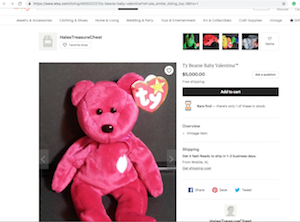
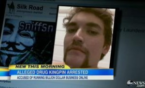
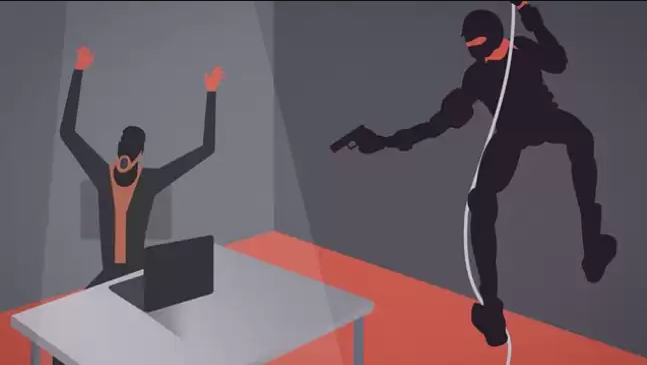

Crypto Currency
What is bitcoin and how does it effect the economic future?
to quote a man wearing a bitcoin costume that i saw on Last Week Tonigh with John Oliver : “it’s a virtual currency worldwide you can send for little to no fees. It’s open source and not controlled by any government or corporation or individual.. it’s financial freedom bro”
It is essentially allowing anyone to develop their own form of currency and thus making it like a digital gold rush of sorts.
a good point john Oliver made is that it’s an investment because everyone unanimously decided it has value so essentially that value can get over inflated very easily.
I thought the beanie baby was a good example. Why is it that a simple beanie baby can be sold on etsy for $5,000 like this one… simply because we say so. When as john oliver literally did, you can buy the exact same one for $20.

that is why there is a fear that terrorist and organized crime organizations will start to take advantage of cryptocurrency and it’s many features.
How Cryptocurrency is becoming popular amongst organized crime and how it is being stopped
Forbes posted an article saying a reason this fear exists is because with digital currency each transition is on a blockchain. The data is not directly linked to any names, physical addresses or any other identifying information. This makes digital currencies anonymous in many ways that make it harder for law enforcement because you can’t trace or exactly charge any one person for said transaction.
According to this Forbes article which they referenced a 2015 Europol report, “bitcoin was used in over 40% of illicit transactions in the European Union”
Ross Ulbrich and the Silk Road

Ross Ulbrich was the founder of the Silk Road (a popular website for selling narcotics by the masses) was referred to as a drug kingpin when arrested . His whole Empire all was made through cryptocurrency.
Vice made a documentary about this called “Drugs, Death and the Dark Web” which was aired on bbc. They say that in 2011 when the website kicked off it was referred to as the “amazon of illegal drugs and then became such an issue that not only the FBI, and DEA, had to get involved, but since it was such a big organization the secret service had to eventually participate as well. Ross Ulbrich’s enterprise in the end was actually brought down by an you tax inspector of all people.
